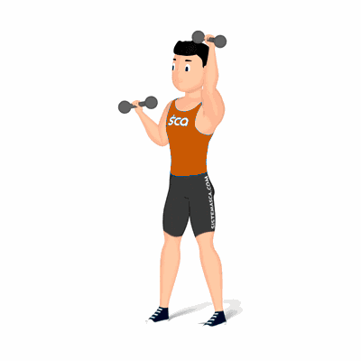

Desenvolvimento Alternado

Exercício para fortalecimento e hipertrofia dos músculos da região dos ombros. Realiza em pé, exige que o praticante possua músculos auxiliares fortalecidos, tais como: admonais, lombares, tríceps, trapézio e peitoral superior.
Ficha Técnica
Tipo: Musculação
Grupo Muscular: Ombro
Aparelho: Nenhum
Músculos: Nenhum
Como realizar
- Pegue dois halteres com as palmas das mãos voltadas para frente;
- Cabeça e costas alinhadas, joelhos semiflexionados, pés ligeiramente separados;
- Suba os pesos até a altura do pescoço com cotovelos flexionados, ao lado do corpo, com os antebraços na posição vertical;
- Com a força dos músculos dos ombros empurre um haltere para cima até o cotovelo ficar estendido;
- Retorne à posição inicial e repita o movimento com o outro braço;
- Intercale os movimentos até o total de repetições orientado pelo professor.
 RC STORE
RC STORE